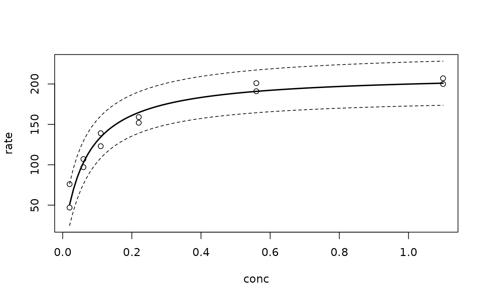

Generic prediction method for various types of fitted models. predFit
can be used to obtain standard errors of fitted values and
adjusted/unadjusted confidence/prediction intervals for objects of class
"lm", "nls", and "glm".
Usage
predFit(object, ...)
# Default S3 method
predFit(object, ...)
# S3 method for class 'lm'
predFit(
object,
newdata,
se.fit = FALSE,
interval = c("none", "confidence", "prediction"),
level = 0.95,
adjust = c("none", "Bonferroni", "Scheffe"),
k,
...
)
# S3 method for class 'glm'
predFit(
object,
newdata,
type = c("link", "response"),
se.fit = FALSE,
interval = c("none", "confidence"),
level = 0.95,
...
)
# S3 method for class 'nls'
predFit(
object,
newdata,
se.fit = FALSE,
interval = c("none", "confidence", "prediction"),
level = 0.95,
adjust = c("none", "Bonferroni", "Scheffe"),
k,
...
)
# S3 method for class 'lme'
predFit(object, newdata, se.fit = FALSE, ...)Arguments
- object
An object that inherits from class
"lm","glm","nls", or"lme".- ...
Additional optional arguments. At present, no optional arguments are used.
- newdata
An optional data frame in which to look for variables with which to predict. If omitted, the fitted values are used.
- se.fit
A logical vaue indicating if standard errors are required. Default is
FALSE.- interval
Type of interval to be calculated. Can be one of "none" (default), "confidence", or "prediction". Default is
"none".- level
A numeric scalar between 0 and 1 giving the confidence level for the intervals (if any) to be calculated. Default is
0.95.- adjust
A logical value indicating if an adjustment should be made to the critical value used in calculating the confidence interval. This is useful for when the calibration curve is to be used multiple, say k, times. Default is
FALSE.- k
The number times the calibration curve is to be used for computing a confidence/prediction interval. Only needed when
adjust = "Bonferroni".- type
Character string specifying the type of prediction. Current options are
type = "link"(the default) andtype = "response".
Value
If se.fit = FALSE, then predFit() returns a vector of
predictions or a matrix of predictions and bounds with column names
fit, lwr, and upr if interval is not
"none". (This function is more so meant for internal use.)
If se.fit = TRUE, then a list with the following components is
returned:
fita vector or matrix as described above;se.fita vector containing the standard errors of the predicted means;residual.scalethe residual standard deviations;dfthe residual degrees of freedom.
Details
Confidence and prediction intervals for linear models (i.e., "lm"
objects) are obtained according to the usual formulas. Nonlinear and
generalized linear models (i.e., "nls" and "glm" objects), on
the other hand, rely on Taylor-series approximations for the standard errors
used in forming the intervals. Approximate standard errors for the fitted
values in linear mixed-effects models (i.e., "lme" objects) can also
be computed; however, these rely on the approximate variance-covariance
matrix of the fixed-effects estimates and often under estimate the true
standard error. More accurate standard errors can be obtained using the
parametric bootstrap; see the bootMer function in the lme4 package
for details.
For linear and nonlinear models, it is possible to request adjusted
confidence or prediction intervals using the Bonferroni method
(adjust = "Bonferroni") or Scheffe's method
(adjust = "Scheffe"). For the Bonferroni adjustment, you must specify
a value for k, the number of intervals for which the coverage is to
hold simultaneously. For the Scheffe adjustment, specifying a value for
k is only required when interval = "prediction"; if
interval = "confidence", k is set equal to \(p\), the number
of regression parameters. For example, calling plotFit on "lm"
objects with interval = "confidence" and adjust = "Scheffe"
will plot the Working-Hotelling band.
Examples
# A linear regression example (see ?datasets::cars)
cars.lm <- lm(dist ~ speed + I(speed^2), data = cars)
predFit(cars.lm, interval = "confidence")
#> fit lwr upr
#> 1 7.722637 -8.665329 24.11060
#> 2 7.722637 -8.665329 24.11060
#> 3 13.761157 4.154858 23.36746
#> 4 13.761157 4.154858 23.36746
#> 5 16.173834 8.100923 24.24674
#> 6 18.786430 11.845147 25.72771
#> 7 21.598944 15.392573 27.80532
#> 8 21.598944 15.392573 27.80532
#> 9 21.598944 15.392573 27.80532
#> 10 24.611377 18.796142 30.42661
#> 11 24.611377 18.796142 30.42661
#> 12 27.823729 22.155392 33.49207
#> 13 27.823729 22.155392 33.49207
#> 14 27.823729 22.155392 33.49207
#> 15 27.823729 22.155392 33.49207
#> 16 31.235999 25.584818 36.88718
#> 17 31.235999 25.584818 36.88718
#> 18 31.235999 25.584818 36.88718
#> 19 31.235999 25.584818 36.88718
#> 20 34.848188 29.179446 40.51693
#> 21 34.848188 29.179446 40.51693
#> 22 34.848188 29.179446 40.51693
#> 23 34.848188 29.179446 40.51693
#> 24 38.660295 32.999080 44.32151
#> 25 38.660295 32.999080 44.32151
#> 26 38.660295 32.999080 44.32151
#> 27 42.672321 37.066461 48.27818
#> 28 42.672321 37.066461 48.27818
#> 29 46.884266 41.367756 52.40078
#> 30 46.884266 41.367756 52.40078
#> 31 46.884266 41.367756 52.40078
#> 32 51.296129 45.850117 56.74214
#> 33 51.296129 45.850117 56.74214
#> 34 51.296129 45.850117 56.74214
#> 35 51.296129 45.850117 56.74214
#> 36 55.907911 50.419661 61.39616
#> 37 55.907911 50.419661 61.39616
#> 38 55.907911 50.419661 61.39616
#> 39 60.719611 54.953000 66.48622
#> 40 60.719611 54.953000 66.48622
#> 41 60.719611 54.953000 66.48622
#> 42 60.719611 54.953000 66.48622
#> 43 60.719611 54.953000 66.48622
#> 44 70.942768 63.500188 78.38535
#> 45 76.354224 67.444478 85.26397
#> 46 81.965599 71.194396 92.73680
#> 47 81.965599 71.194396 92.73680
#> 48 81.965599 71.194396 92.73680
#> 49 81.965599 71.194396 92.73680
#> 50 87.776892 74.782756 100.77103
# A nonlinear least squares example (see ?datasets::Puromycin)
data(Puromycin, package = "datasets")
Puromycin2 <- Puromycin[Puromycin$state == "treated", ][, 1:2]
Puro.nls <- nls(rate ~ Vm * conc/(K + conc), data = Puromycin2,
start = c(Vm = 200, K = 0.05))
conc <- seq(from = 0.02, to = 1.10, length = 101)
pred <- predFit(Puro.nls, newdata = data.frame(conc), interval = "prediction")
plot(Puromycin2, ylim = c(min(pred[, "lwr"]), max(pred[, "upr"])))
lines(conc, pred[, "fit"], lwd = 2)
lines(conc, pred[, "lwr"], lty = 2)
lines(conc, pred[, "upr"], lty = 2)
